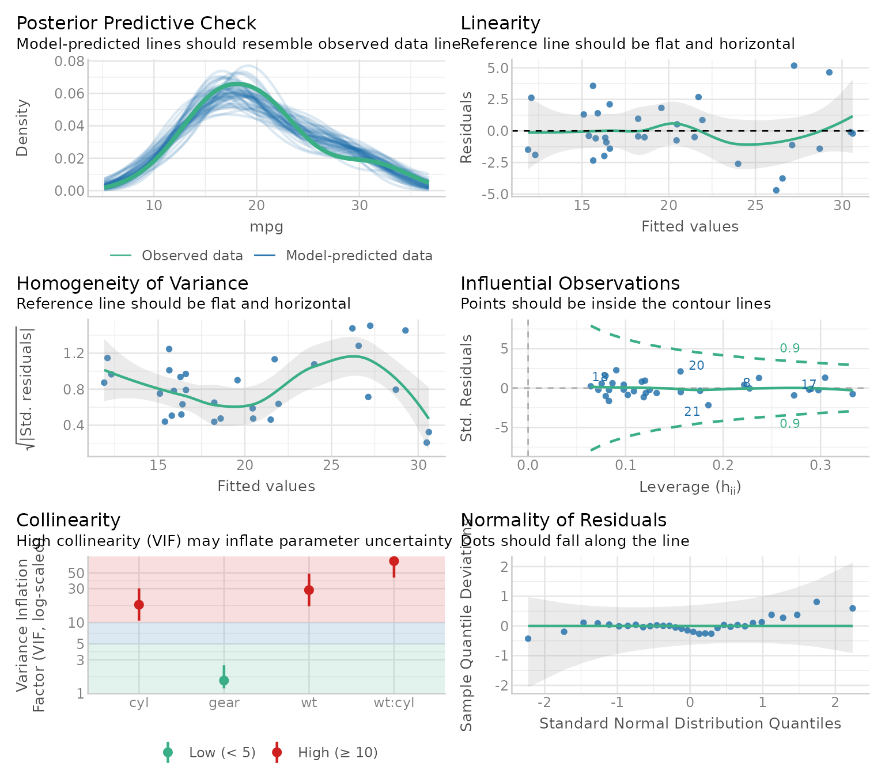
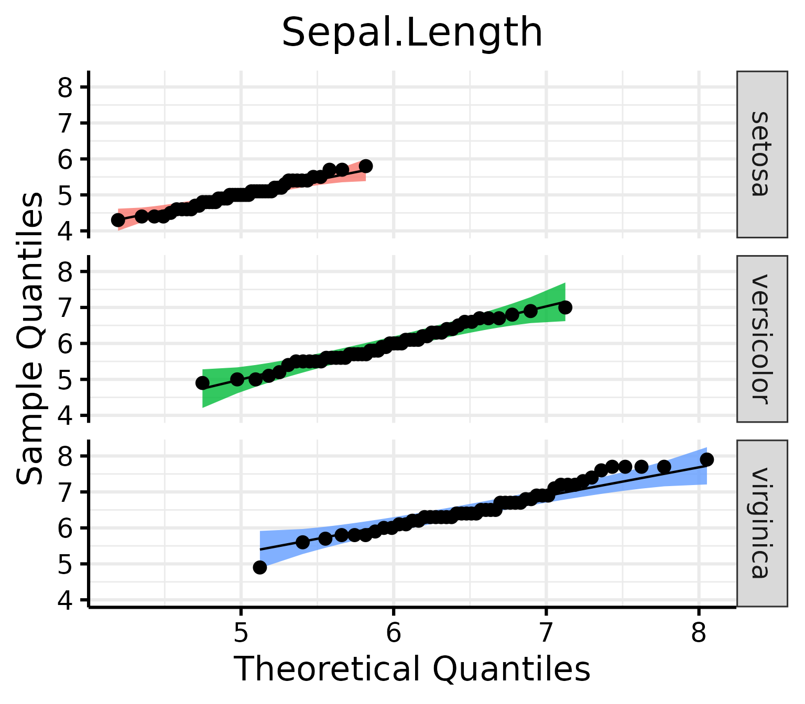
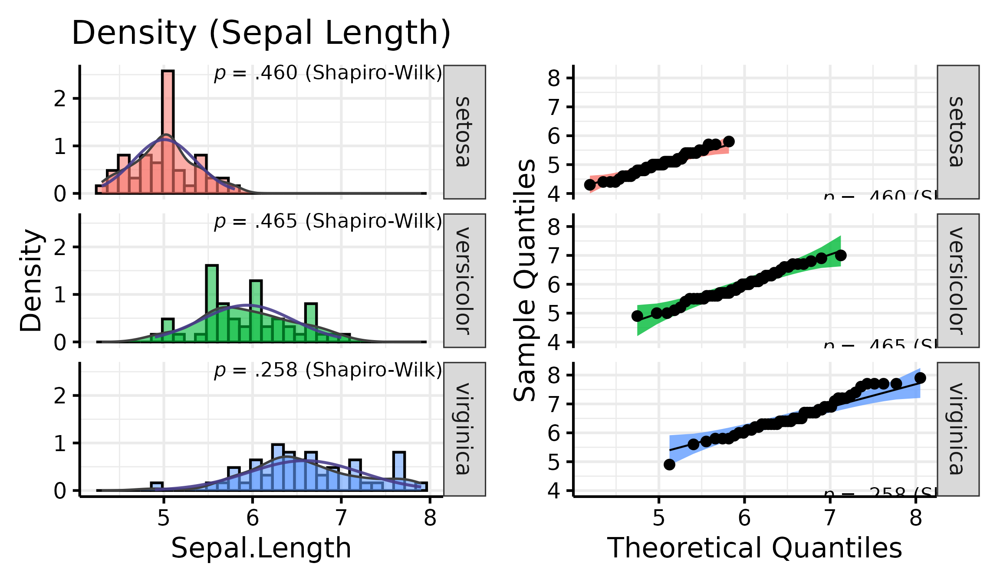
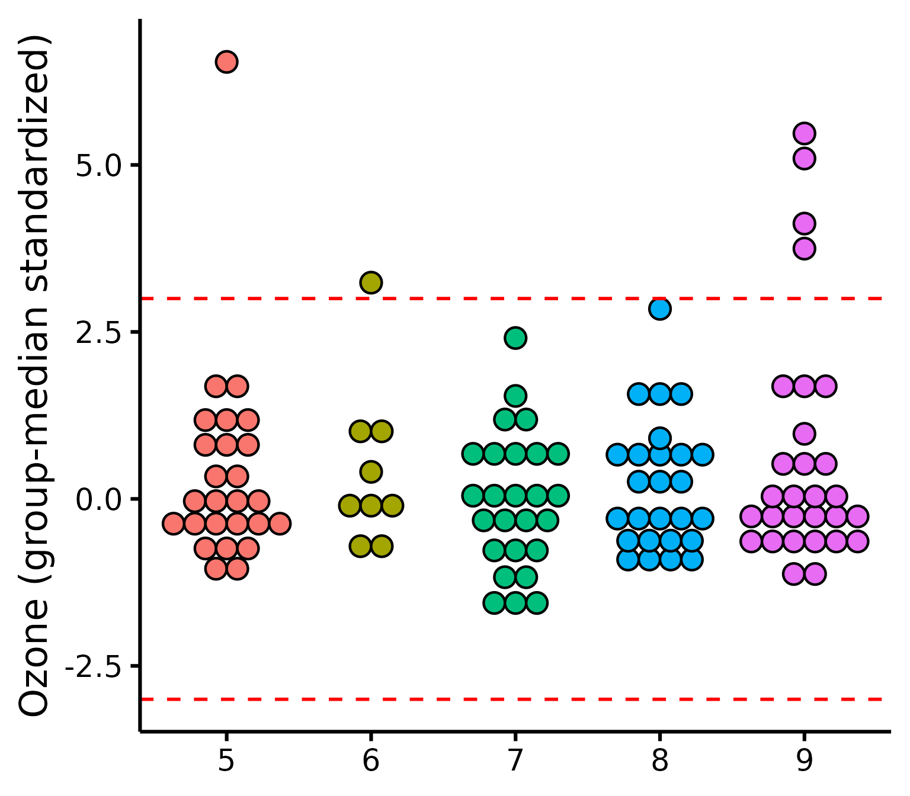
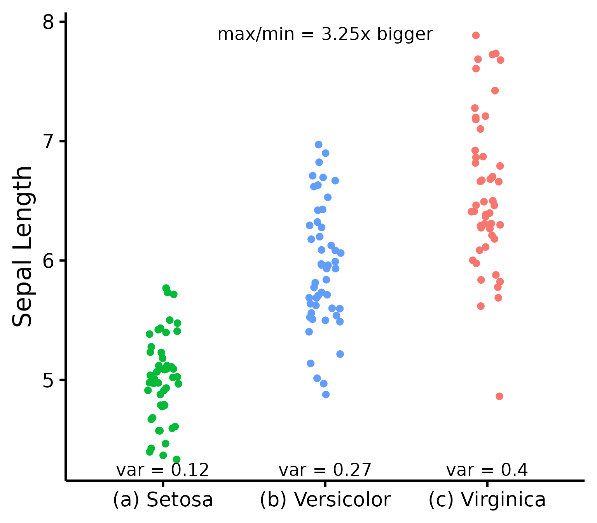

Quickly test linear regression assumptions
Rémi Thériault
December 25, 2020
Source:vignettes/assumptions.Rmd
assumptions.RmdBasic idea
I recently discovered a wonderful package for easily checking linear
regression assumptions via diagnostic plots: the
check_model() function of the performance
package.
Let’s make a quick demonstration of this package first.
# Load necessary libraries
library(performance)
library(see)
# Note: if you haven't installed the packages above,
# you'll need to install them first by using:
# install_if_not_installed(c("performance", "see"))
# Create a regression model (using data available in R by default)
model <- lm(mpg ~ wt * cyl + gear, data = mtcars)
# Check model assumptions
check_model(model)
Wonderful! And efficient. However, sometimes, for different reasons, someone might want to check assumptions with an objective test. Testing each assumption one by one is kind of time-consuming, so I made a convenience function to accelerate this process.
Just a warning before jumping into objective assumption tests. Note these tests are generally NOT recommended! With a large sample size, objective assumption tests will be OVER-sensitive to deviations from expected values, while with a small sample size, the objective assumption tests will be UNDER-powered to detect real, existing deviations. It can also mask other visual patterns not reflected in a single number. It is thus recommended to use visual assessment of diagnostic plots instead (e.g., see Shatz, 2023, Kozak & Piepho, 2018, https://doi.org/10.1111/jac.12220; Schucany & Ng, 2006). For a quick and accessible argument against tests of normality specifically, see this source.
Getting Started
Load the rempsyc package:
Note: If you haven’t installed this package yet, you will need to install it via the following command:
install.packages("rempsyc"). Furthermore, you may be asked to install the following packages if you haven’t installed them already (you may decide to install them all now to avoid interrupting your workflow if you wish to follow this tutorial from beginning to end):
pkgs <- c(
"flextable", "performance", "see", "lmtest", "ggplot2",
"qqplotr", "ggrepel", "patchwork", "boot"
)
install_if_not_installed(pkgs)The raw output doesn’t look so nice in the console because the column names are so long, but it does look good in the viewer or when exported to a word processing software because the column names get wrapped. You can try it in RStudio yourself with the following command:
View(nice_assumptions(model))
nice_table(nice_assumptions(model), col.format.p = 2:4)Model |
Normality (Shapiro-Wilk) |
Homoscedasticity (Breusch-Pagan) |
Autocorrelation of residuals (Durbin-Watson) |
Diagnostic |
|---|---|---|---|---|
mpg ~ wt * cyl + gear |
.615 |
.054 |
.525 |
0.00 |
Interpretation: (p) values < .05 imply assumptions are not respected. Diagnostic is how many assumptions are not respected for a given model or variable.
This function is particularly useful when testing several models simultaneously as it makes for a nice table of results. Let’s make a short demonstration of this.
# Define our dependent variables
DV <- names(mtcars[-1])
# Make list of all formulas
formulas <- paste(DV, "~ mpg")
# Make list of all models
models.list <- lapply(X = formulas, FUN = lm, data = mtcars)
# Make diagnostic table
assumptions.table <- nice_assumptions(models.list)Use the Viewer for better results
View(assumptions.table)
Or alternatively with the nice_table() function
nice_table(assumptions.table, col.format.p = 2:4)Model |
Normality (Shapiro-Wilk) |
Homoscedasticity (Breusch-Pagan) |
Autocorrelation of residuals (Durbin-Watson) |
Diagnostic |
|---|---|---|---|---|
cyl ~ mpg |
.361 |
.282 |
.460 |
0.00 |
disp ~ mpg |
.506 |
.831 |
.077 |
0.00 |
hp ~ mpg |
.004** |
.351 |
.198 |
1.00 |
drat ~ mpg |
.939 |
.887 |
.505 |
0.00 |
wt ~ mpg |
.020* |
.270 |
.002** |
2.00 |
qsec ~ mpg |
.427 |
.944 |
.011* |
1.00 |
vs ~ mpg |
.142 |
.568 |
.238 |
0.00 |
am ~ mpg |
.074 |
.650 |
< .001*** |
1.00 |
gear ~ mpg |
.001** |
.528 |
< .001*** |
2.00 |
carb ~ mpg |
.008** |
.362 |
.003** |
2.00 |
Categorical Predictors
If you have categorical predictors (e.g., groups), then it is suggested that you check assumptions directly on the raw data rather than on the residuals (source).
In this case, one can make qqplots on the different groups to first check the normality assumption.
QQ Plots
Make the basic plot
nice_qq(
data = iris,
variable = "Sepal.Length",
group = "Species"
)
Generally speaking, as long as the dots lie within the confidence band, all is good and the data distribute normally.
Further customization
Change (or reorder) colours, x-axis title or y-axis title, names of groups, no grid lines, or add the p-value from the Shapiro-Wilk (if you wish so).
nice_qq(
data = iris,
variable = "Sepal.Length",
group = "Species",
colours = c("#00BA38", "#619CFF", "#F8766D"),
groups.labels = c("(a) Setosa", "(b) Versicolor", "(c) Virginica"),
grid = FALSE,
shapiro = TRUE,
title = NULL
)
A p > .05 suggests that your data is normally distributed (according to the Shapiro-Wilk test). Inversely, a p < .05 suggests your data is not normally distributed. Keep in mind however that there are several known problems with objective tests, so visual assessment is recommended. Nonetheless, for beginners, it can sometimes be useful (or rather, reassuring) to be able to pair the visual assessment to the tests values.
Density Plots
Some people think that density distributions are less useful than qqplots, but sometimes, people still like to look at distributions, so I made another function for this.
Make the basic plot
nice_density(
data = iris,
variable = "Sepal.Length",
group = "Species"
)
Pro tip: Save density plots with a narrower width for better-looking results.
Further customization
Change (or reorder) colours, x-axis title or y-axis title, names of groups, no grid lines, or add the p-value from the Shapiro-Wilk (if you wish so).
nice_density(
data = iris,
variable = "Sepal.Length",
group = "Species",
colours = c("#00BA38", "#619CFF", "#F8766D"),
xtitle = "Sepal Length",
ytitle = "Density (vs. Normal Distribution)",
groups.labels = c("(a) Setosa", "(b) Versicolor", "(c) Virginica"),
grid = FALSE,
shapiro = TRUE,
histogram = TRUE,
title = "Density (Sepal Length)"
)
Density + QQ Plots
Finally, it is also possible to combine both these plot types with a
single function, nice_normality.
nice_normality(
data = iris,
variable = "Sepal.Length",
group = "Species",
shapiro = TRUE,
histogram = TRUE,
title = "Density (Sepal Length)"
)
Outliers
To check outliers for categorical predictors, we can check for each
group whether any observations is greater than 3 units. By default it
uses median absolute deviations (MADs, with
method = "mad"), based on the following publication:
Leys, C., Klein, O., Bernard, P., & Licata, L. (2013). Detecting outliers: Do not use standard deviation around the mean, use absolute deviation around the median. Journal of Experimental Social Psychology, 49(4), 764–766. https://doi.org/10.1016/j.jesp.2013.03.013
Make the basic plot
plot_outliers(
airquality,
group = "Month",
response = "Ozone"
)
Be aware that checking outliers by group and not by group will yield different results, e.g.,:
plot_outliers(
airquality,
response = "Ozone"
)Further customization
Change (or reorder) colours, y-axis title, names of groups, or detection method.
plot_outliers(
airquality,
group = "Month",
response = "Ozone",
method = "sd",
criteria = 3.29,
colours = c("white", "black", "purple", "grey", "pink"),
ytitle = "Ozone",
xtitle = "Month of the Year"
)
Flagging outliers
Outliers can also be identifed with find_mad and
multiple variables:
## 8 outlier(s) based on 3 median absolute deviations for variable(s):
## Ozone, Solar.R, Wind, Temp, Month, Day
##
## Outliers per variable:
##
## $Ozone
## Row Ozone_mad
## 1 30 3.218284
## 2 62 3.989131
## 3 99 3.488081
## 4 101 3.025573
## 5 117 5.261028
## 6 121 3.333911
##
## $Wind
## Row Wind_mad
## 1 9 3.049871
## 2 48 3.225825Winsorizing outliers
Outliers can also be winsorized with winsorize_mad,
meaning that outlier values outside 3 MADs will be brought back to 3
MADs:
winsorize_mad(airquality$Ozone, criteria = 3) |>
head(30)## [1] 41.0000 36.0000 12.0000 18.0000 NA 28.0000 23.0000 19.0000
## [9] 8.0000 NA 7.0000 16.0000 11.0000 14.0000 18.0000 14.0000
## [17] 34.0000 6.0000 30.0000 11.0000 1.0000 11.0000 4.0000 32.0000
## [25] NA NA NA 23.0000 45.0000 109.3365Multivariate outliers
For multivariate outliers, it is recommended to use the Minimum
Covariance Determinant (MCD), as available in the
performance package from easystats mentioned
in the beginning of this post.
check_outliers(na.omit(airquality), method = "mcd")## 7 outliers detected: cases 6, 7, 11, 14, 23, 34, 77.
## - Based on the following method and threshold: mcd (22.458).
## - For variables: Ozone, Solar.R, Wind, Temp, Month, Day.We note also that ideally the handling of outliers should be preregistered a priori. For more up-to-date recommendations on handling outliers, please see:
Leys, C., Delacre, M., Mora, Y. L., Lakens, D., & Ley, C. (2019). How to classify, detect, and manage univariate and multivariate outliers, with emphasis on pre-registration. International Review of Social Psychology, 32(1). https://doi.org/10.5334/irsp.289
Homoscedasticity (equality of variance)
To check homoscedasticity (equality of variance) for categorical predictors, we can check the variance within each group. We can use a rule of thumb that the variance of one group should not be four times that of another group. We can check that with this function which makes a table.
Make the basic table

Let’s now try it for many variables to see how handy it can be.
# Define our dependent variables
DV <- names(iris[1:4])
# Make diagnostic table
var.table <- nice_var(
data = iris,
variable = DV,
group = "Species"
)Use the Viewer for better results (or export it to Word using my nice_table() function)
View(var.table)
Further customization
Change (or reorder) colours, y-axis title, or names of groups.
nice_varplot(
data = iris,
variable = "Sepal.Length",
group = "Species",
colours = c("#00BA38", "#619CFF", "#F8766D"),
ytitle = "Sepal Length",
groups.labels = c("(a) Setosa", "(b) Versicolor", "(c) Virginica")
)
Thanks for checking in
Make sure to check out this page again if you use the code after a time or if you encounter errors, as I periodically update or improve the code. Feel free to contact me for comments, questions, or requests to improve this function at https://github.com/rempsyc/rempsyc/issues. See all tutorials here: https://remi-theriault.com/tutorials.